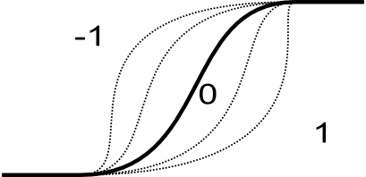

OPTIONS
- input
- Name of input raster map to be fuzzified. This map may be of any type and may
require null values.
- points
- A list containing 4 (A,B,C,D) or 2 (A,B) points defining set boundaries.
Points do not have to be in map range, but this may lead to only 0 o 1 membership for
the whole map. For side parameter "both", range between A and D defines base,
but range between B and C core of the fuzzy set. Between A and B and C and D are
set's boundaries. If side is "both" it require 4 points, else 2 points.
Fuzzy set definition:

- side
- Option indicates if set is fuzzified of both sides (both), left or right
side. See description for details.
Boundary definition:

OUTPUTS
- output
- Map containing membership value of original map. Map is alvays of type
FCELLS and contains values from 0 (no membership) to 1 (full membership). Values
between 0 and 1 indicate partial membership
FUZZY SET PARAMETERS
- boundary
- Parameter defined the shape of the fuzzy boundary. The default and most
popular is S-shaped, linear, J-shaped and G-shaped boundaries are also
available. The same boundaries are applied to the both sides.
- shape
- Optional shape modifier. Range from -1 to 1. The default value is 0 and
should not be changed in most of the time. The negative values indicate more
dilatant set, the positive values more concentrate set. See NOTES for
details.
Impact of shape parameter on shape boundary:

- height
- Optional height modifier. Range from 0 to 1. The default value is 1 and
indicates full membership. If height is less than one the
maximum membership is equal to height. See image: Fuzzy set definition.
DESCRIPTION
Definition of fuzzy set
Fuzzy sets are sets whose elements have degrees of membership. Zadeh (1965)
introduced Fuzzy sets as an extension of the classical notion of sets. Classical
membership of elements in a set are binary terms: an element either belongs or
does not belong to the set. Fuzzy set theory use the gradual assessment of the
membership of elements in a set. A membership function valued in the real unit
interval [0, 1]. Classical sets, are special cases of the membership functions
of fuzzy sets, if the latter only take values 0 or 1. Classical sets are in
fuzzy set theory usually called crisp sets. Fuzzy set theory can be used in
a wide range of domains in which information is imprecise, including many
GIS operations.
NOTES
Calculation of boundary shape
Depending on type of the boundary different equation are used to determine its
shape:
Linear: the membership is calculated according following equation:
value <= A -> x = 0
A < value > B -> x = (value-A)/(B-A)
B <= value >= C -> x = 1
C < value > D -> x = (D-value)/(D-C)
value >= D -> x = 0
where x: membership
S-shaped: the membership is calculated according following equation:
sin(x * Pi/2)^m (for positive shape parameter)
1-cos(x * Pi/2)^m (for negative shape parameter)
where x: membership, and
m = 2^exp(2 * |shape|)
For default shape=0, m = 2 (most common parameter for that equation).
G-shaped: the membership is calculated according following equation:
tan(x * Pi/4)^1/m
where x: membership, and
m = 2^exp(-2 * shape) (for negative shape parameter)
m = 2^(1-shape) (for positive shape parameter)
For default shape=0, m = 2 (most common parameter for that equation).
J shaped: it use following equations:
tan(x * Pi/4)^m
where x: membership, and
m = 2^exp(2 * shape) (for positive shape parameter)
m = 2^(1+shape) (for negative shape parameter)
For default shape=0, m = 2 (most common parameter for that equation).
SEE ALSO
r.fuzzy.logic addon,
r.fuzzy.system addon,
r.mapcalc,
REFERENCES
- Jasiewicz, J. (2011). A new GRASS GIS fuzzy inference system for massive data analysis.
Computers & Geosciences (37) 1525-1531. DOI https://doi.org/10.1016/j.cageo.2010.09.008
- Zadeh, L.A. (1965). "Fuzzy sets". Information and Control 8 (3): 338–353.
https://doi.org/10.1016/S0019-9958(65)90241-X.
- Novák, Vilém (1989). Fuzzy Sets and Their Applications. Bristol: Adam Hilger.
ISBN 0-85274-583-4.
- Klir, George J.; Yuan, Bo (1995). Fuzzy sets and fuzzy logic: theory and
applications. Upper Saddle River, NJ: Prentice Hall PTR. ISBN 0-13-101171-5.
- Klir, George J.; St Clair, Ute H.; Yuan, Bo (1997). Fuzzy set theory:
foundations and applications. Englewood Cliffs, NJ: Prentice Hall. ISBN
0133410587.
- Meyer D, Hornik K (2009a). Generalized and Customizable Sets in R. Journal of
Statistical Software, 31(2), 1-27. DOI https://doi.org/10.18637/jss.v031.i02
- Meyer D, Hornik K (2009b). sets: Sets, Generalized Sets, and Customizable Sets.
R~package version~1.0, URL http://CRAN.R-project.org/package=sets.
AUTHOR
Jarek Jasiewicz